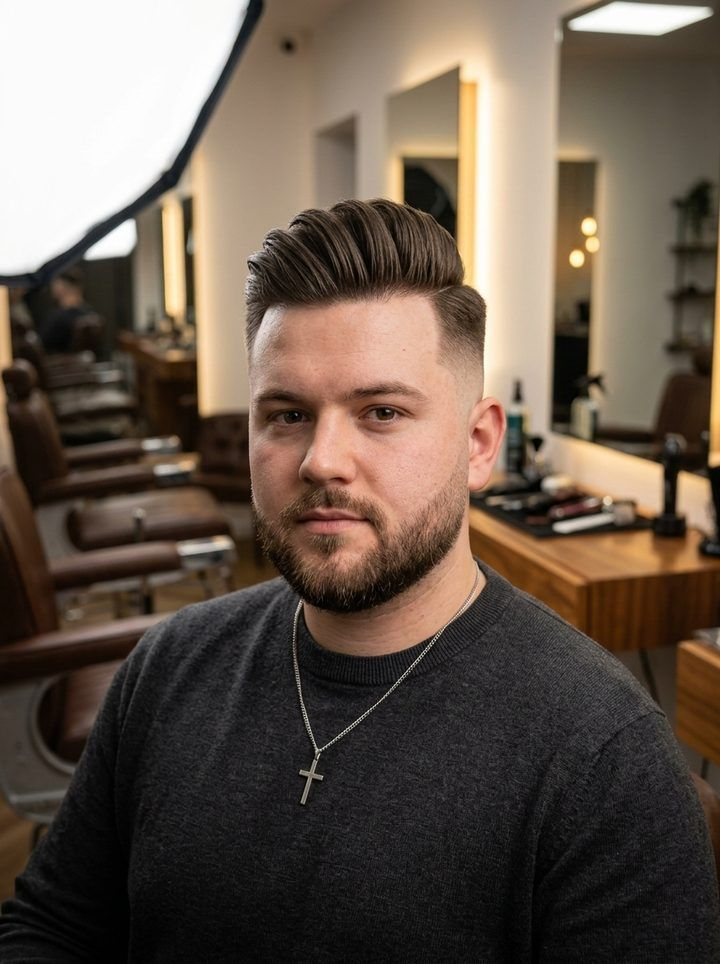
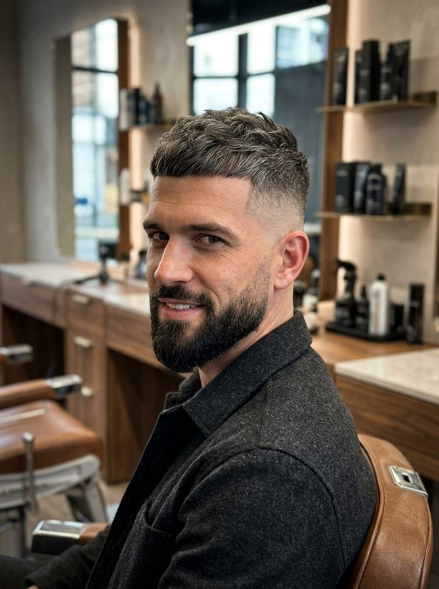
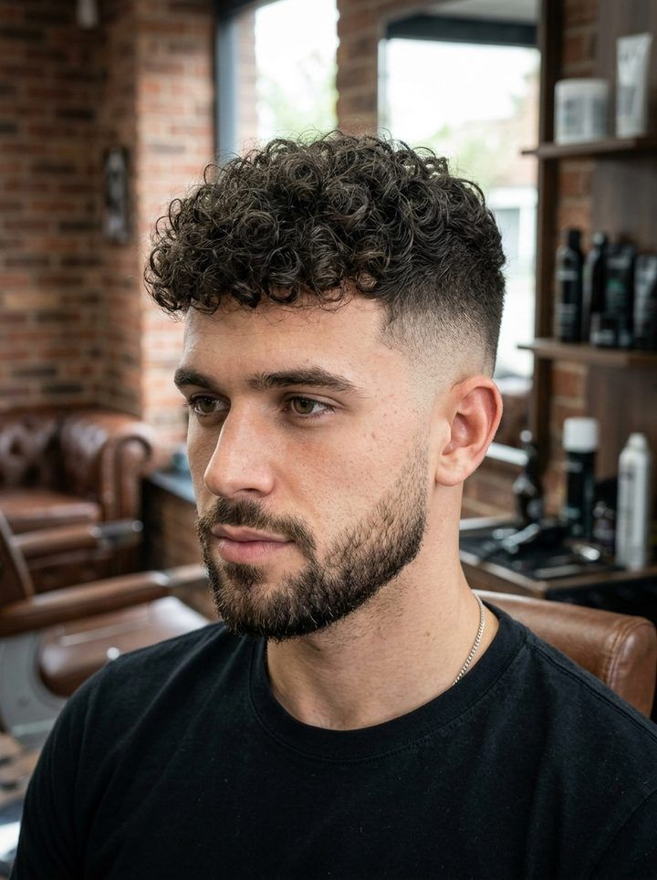
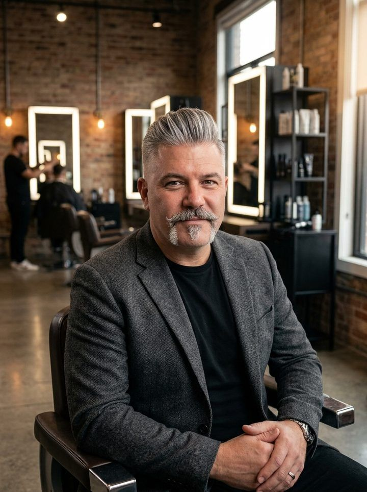
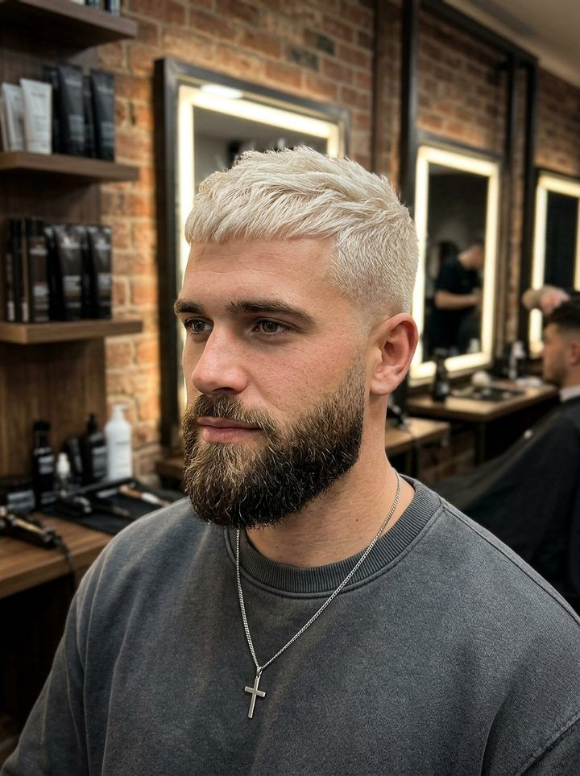

Top Barber Shop
in Szczecin
Our Services
From clean fades to full grooming combos — every cut is precision work, tailored to how you actually want to look.
-
Haircut
-
Long Hair Haircut

-
Beard

-
Combo

-
Royal Combo

-
Haircut Refresh
-
Combo + Colour

Wyjdź jak nowy.
What clients say
A few words from people who've sat in the chair.
Sit down.
Let's shape it.
—